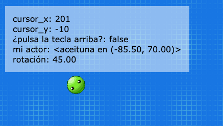
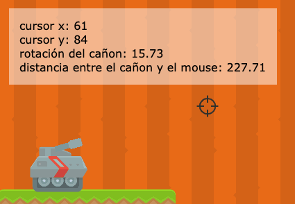

На екрані ми можемо швидко візуалізувати значення атрибутів, змінних або виразів у грі.
Наприклад, уявіть, що у вашій грі є персонаж, який взаємодіє з положеннями x і y вказівника миші. Значення координат вказівника миші можна вивести на екран:

Надзвичайно важливо мати можливість швидко візуалізувати змінні в грі, щоб не тільки бути поінформованими, але й виявляти помилки або навіть знати, чи ми отримуємо доступ до правильної інформації.
Для цих цілей викликається фукнція pilas.observar, аргументами якої є ім'я, що буде відображатися на екрані (на ваш вибір) і назва змінної? за якою ми будемо "спостерігати":
actualizar() {
this.pilas.observar("cursor_x", this.pilas.cursor_x);
this.pilas.observar("cursor_y", this.pilas.cursor_y);
this.pilas.observar("do you press the up key", this.pilas.control.arriba);
}Зверніть увагу, що змінні, за якими потрібно "спостерігати", завжди повинні створюватися з функції actualizar, або від акторів, або зі сцени, тому що це єдиний спосіб, який дозволяє знати останнє значення цих змінних.
Іншим корисним прикладом може бути можливість знати точну позицію актора, якого ми створили. Ми навіть можемо надрукувати на екрані й інші параметри, такі як обертання або вертикальна швидкість:
class un_actor extends Actor {
iniciar() {
this.x = -100;
this.y = 70;
}
actualizar() {
this.pilas.observar("mi actor", this)
this.pilas.observar("rotación", this.rotacion)
}
}Якщо ви бажаєте детальніше розібратися, як візуалізувати значення змінних на екрані, відкрийте приклад з назвою "angulo":
